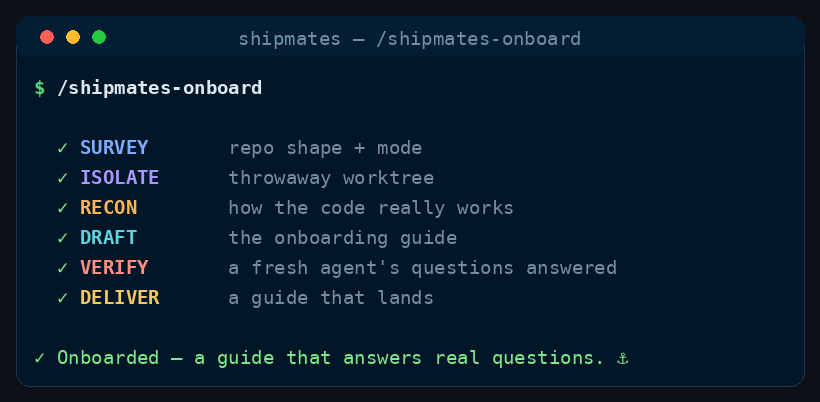

Command
/shipmates-onboard
recon → draft → prove it answers
Read an unfamiliar repo and write the agent-facing map the crew needs.
See it run

/shipmates-onboard runs, in order.How to run it
Run it in your harness
/shipmates-onboard [path to the repo — defaults to the current one]<angle brackets> = required · [square brackets] = optional
How it works
Architect and SDET always recon. DevOps joins when there is a pipeline or image to inspect. A writer drafts the file; a fresh agent — not the writer — must be able to answer from it alone.
Survey
How the repo is laid out, tested, and run. Commands that end up in the file must have been run, not guessed.
Also sit when
devops-engineerthe repo has a pipeline, image, or infrastructure definition
Draft
Write the agent-facing contract from what recon actually found: commands, boundaries, quality bar.
Crew
Prove
A fresh agent gets the file and nothing else, and must answer the questions the crew actually asks.
A fresh agent — not the writer, and not a named specialist.
Land
Leave a file the next session can trust, usually as a PR so you can see the diff.
No extra spawn — the guide is the deliverable.
When to use
- Agents (or you) lack a trustworthy picture of how this repo works.
- User-facing docs? /shipmates-document. Then start shipping with /ship-issue.
The skill
The installer ships the full skill — stages, gates, config — from commands/shipmates-onboard.md.